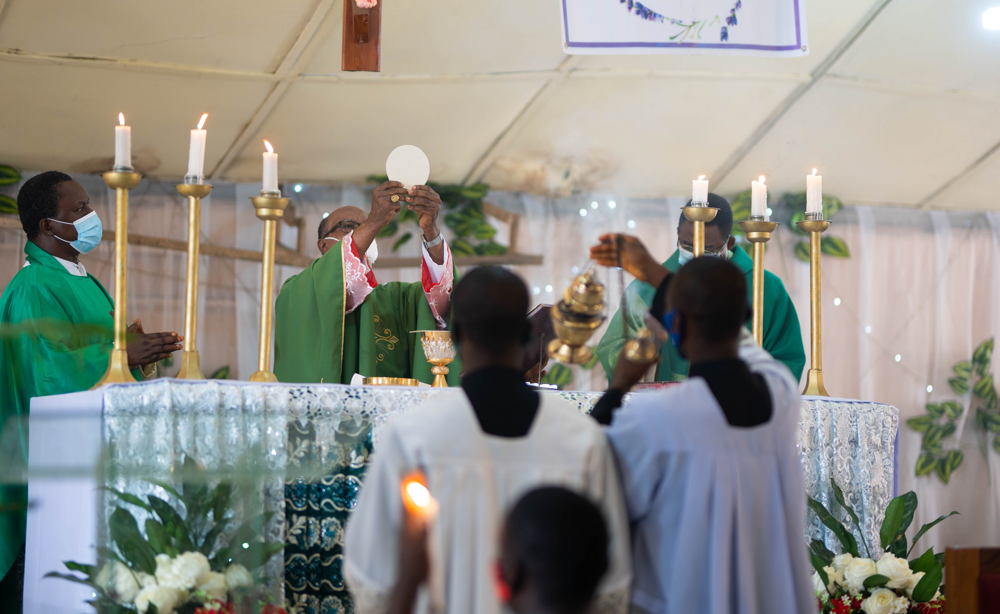

La Messa, detta talvolta Santa Messa o celebrazione eucaristica, è una liturgia propria di diverse Chiese cristiane.

La celebrazione eucaristica è tipica della Chiesa cattolica, delle Chiese veterocattoliche, della Chiesa ortodossa, delle Comunità anglicane di tradizione anglo-cattolica, e di alcune comunità luterane che riservano al sacramento dell’eucaristia un ruolo preponderante nella vita della Chiesa stessa.
Significato teologico
La celebrazione eucaristica ha quattro significati principali:
- il convito, segno di unione fra Cristo e la Chiesa, come l’Ultima Cena,
- il memoriale, ricordo e presenza di Cristo nell’attesa del suo ritorno,
- il ringraziamento, per i doni ricevuti da Dio,
- il sacrificio, rinnovazione incruenta del sacrificio di Cristo sul Calvario.
Questi quattro significati principali sono intimamente legati fra loro e sono richiamati da diverse parti della liturgia. Abbastanza vivo è il dibattito teologico su quale, tra questi, sia il significato principale da attribuire alla celebrazione eucaristica.
Nell’eucaristia l’attore principale è Cristo, presente attraverso il sacramento. È infatti Cristo l’offerta che la Chiesa attraverso lo Spirito Santo presenta al Padre in virtù della comunione che la rende «un solo Corpo» con Cristo. L’offerta di Cristo è presentata dal sacerdote, che agisce «in persona Christi» e dall’assemblea che partecipa alla celebrazione. Tuttavia, la celebrazione non è a esclusivo vantaggio dell’assemblea, ma i frutti spirituali dell’eucaristia, che è il sacrificio di Cristo per la redenzione del mondo, sono per tutta la Chiesa, non solo per tutti i vivi, ma anche per le anime dei defunti che si trovano in Purgatorio. Gli angeli e i santi si uniscono alla liturgia terrena che è prefigurazione della liturgia celeste con cui la Chiesa trionfante adora Dio.
Il Concilio di Trento sintetizzò la dottrina della Chiesa inerente alla Santa Messa in nove canoni. Ciascuno di essi rappresenta un dogma, la cui mancata accettazione comporta l’anatema o scomunica. In particolare, essi impongono di riconoscere che la Messa è un sacrificio propiziatorio offerto a Dio in ricordo dell’Ultima Cena; che essa possa essere validamente celebrata dai soli sacerdoti in assenza dei fedeli; che essere offerto per i vivi e per i morti, per i peccati, le pene, le soddisfazione; nonché come Messa di suffragio ai santi volta a ottenere la loro intercessione.